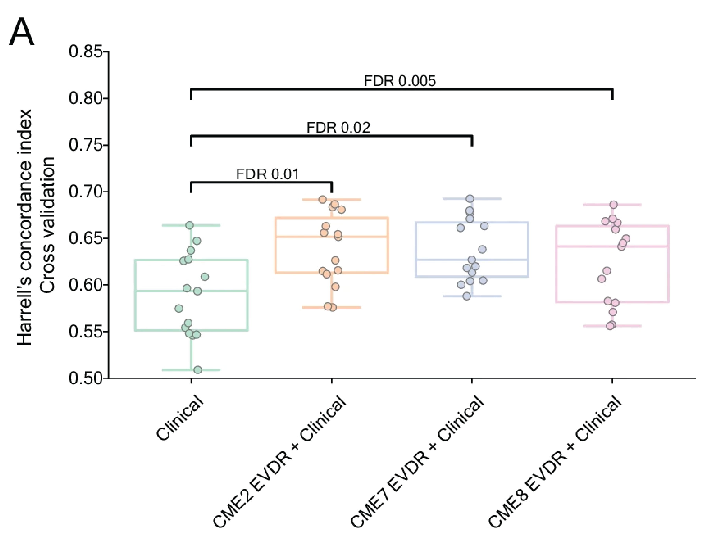

A table can tell us the values in a dataset, but a plot can tell a better story. In this lab we will use ggplot2, a widely used R package for creating plots.
You do not need to memorise the syntax or understand every argument used by ggplot2.
The goal is to become comfortable enough to read, modify, and create basic plots.
In this lab you will learn how to:
Assignment submission: Write your answers to the assignment questions as comments in your code. When you are done with one or several assignments, write your name and the assignments you want graded on the board in the queue. A teacher will come by to check your work. While waiting you can starting working on the next assignment, or if you're feeling brave, the next lab! Once your assignments for today’s lab(s) have been graded, you are free to leave.
We have installed the ggplot2 package in the very beginning of this course.
You only need to install it once, but load each time you start a new R session - the same way as other programs on your computer.
Start by loading the package with:
library(ggplot2)All ggplot2 commands will look something like this:
ggplot(data, aes(x = variable)) + geom_...This line has three main parts:
data = the dataframe containing your data.aes() (from "aesthetics") = the variables you want to plot = names of one or several columns in your dataframe.geom_... (from "geometry") = type of plot, for example a line, scatterplot, or boxplot.For example:
ggplot(data, aes(x = height)) +
geom_histogram()Means approximately: Take data, use height for the x-axis, and draw a histogram.
Your figure can consist of one or several plots ("geoms"), for example displaying both your individual observations and their summary:

This is why the command has a plus sign - you can keep adding new plots, or any other elements of the plot, using +.
A scatter plot shows individual observations as points. We can create some example data:
data <- data.frame(
expression = c(4.2, 5.1, 8.7, 7.9, 3.8, 9.1),
score = c(2.1, 3.4, 5.8, 5.1, 1.9, 6.2)
)And plot it:
ggplot(data, aes(x = expression, y = score)) +
geom_point()Each row in the dataframe becomes one point.
expression on the x-axisscore on the y-axisgeom_point(), have their own parameters. Let's try changing the point size on our plot:geom_point(size = 3)Try a few different values.
alpha = 0.5Can you change both point size and transparency at the same time?
We can also change the color of the points based on another variable. Add a group to the example data:
data$group <- c("A", "A", "B", "B", "A", "B")Now we can use colour = group to tell R to use different colours for the different groups:
ggplot(data, aes(x = expression, y = score, colour = group)) +
geom_point()This is called mapping a variable to an aesthetic (in this case, color).
group.A10.1: In the following code, identify:
ggplot(sex_expr, aes(x = XIST, y = y_score, colour = label)) +
geom_point()
Bar plots are useful for showing counts of observations in categories. Create some example data:
samples <- data.frame(
histology = c("A", "A", "A", "B", "B", "C"),
sex = c("F", "M", "F", "M", "M", "F")
)Try plotting how many observations belong to each category:
ggplot(samples, aes(x = histology)) +
geom_bar()Try coloring the bars according to sex:
ggplot(samples, aes(x = histology, fill = sex)) +
geom_bar()Notice that for the bars, fill is used instead of colour.
As you might have noticed, when you try to show more groups by coloring them (here: sex), by default the bars for the different groups are stacked.
We can instead put them next to each other:
ggplot(samples, aes(x = histology, fill = sex)) +
geom_bar(position = "dodge")A10.2: Create a side-by-side bar plot of patient sex, colored by their histology.
Tip: you need to change something in aes().
A boxplot summarises the distribution of numerical values within one or more groups. For example for this data:
data <- data.frame(
group = c("A", "A", "A", "A", "B", "B", "B", "B"),
value = c(4, 5, 5, 7, 8, 9, 10, 12)
)We can create a boxplot:
ggplot(data, aes(x = group, y = value)) +
geom_boxplot()Each box represents the distribution of values in one group. Boxplots are particularly useful when comparing a numerical measurement between several groups.
value for each group.geom_boxplot(width = 0.5).A boxplot summarises the data, but sometimes we also want to see the individual observations. We can add them with geom_jitter():
ggplot(data, aes(x = group, y = value)) +
geom_boxplot() +
geom_jitter()geom_jitter() moves points slightly sideways so that observations with similar values do not completely overlap. The combination of geom_boxplot() and geom_jitter() is very common.
geom_jitter(width = 0.15). What does this do?We can also use a variable to determine the colour inside the boxes:
ggplot(data, aes(x = group, y = value, fill = group)) +
geom_boxplot()And here we can choose a predefined colour palette:
ggplot(data, aes(x = group, y = value, fill = group)) +
geom_boxplot() +
scale_fill_brewer(palette = "Set2")You do not need to memorise the palette names, when you need one they're easy to look up.
A11.1: Even if you're not plotting the individual observations, geom_boxplot() will often include a couple lone points. Why do you think that happens?
A11.2: Create a boxplot with boxes filled with color, and the individual observations shown on top.
Try writing the two geom commands in the opposite order. What changes?
A more realistic example of the kind of plot you will see later is:
ggplot(
cdf[!is.na(cdf[[age_var]]), ],
aes(x = histology, y = .data[[age_var]], fill = histology)
) +
geom_boxplot(
width = 0.5,
outlier.shape = NA,
alpha = 0.7
) +
geom_jitter(
width = 0.15,
size = 1.4,
alpha = 0.6
) +
scale_fill_brewer(palette = "Set2")This looks more complicated than our earlier examples, but no worries! Let's break it down into pieces you recognize:
ggplot(DATA, aes(x = CATEGORY, y = NUMBER, fill = CATEGORY)) +
geom_boxplot(...) +
geom_jitter(...) +
scale_fill_brewer(...)You're already familiar with several parameters used here, such as size, width and alpha.
A new useful option is outlier.shape.
You can choose the shape used for outliers on the boxplot, but the most common use of this parameter is outlier.shape = NA.
A11.3: Add the outlier.shape parameter to your boxplot code from above. Try some numeric values for this parameter, for example 1, 2, and 3.
Now try using NA instead. What does the it do? Why?
You have now learned all the basics of working with R. In the next labs, you'll get to try your hand on some real RNA sequencing data.